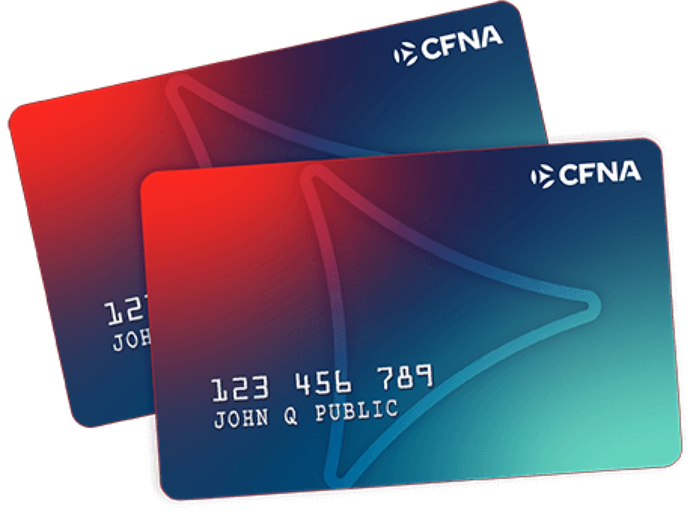
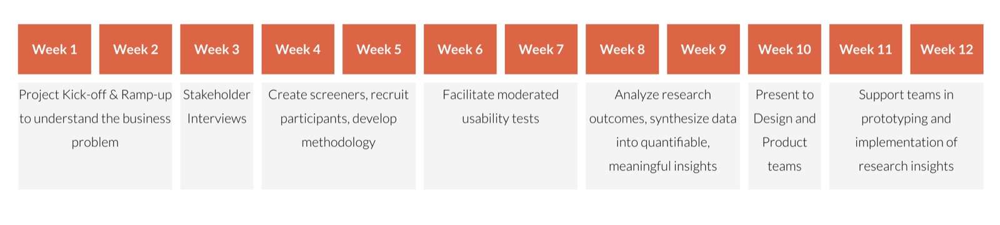
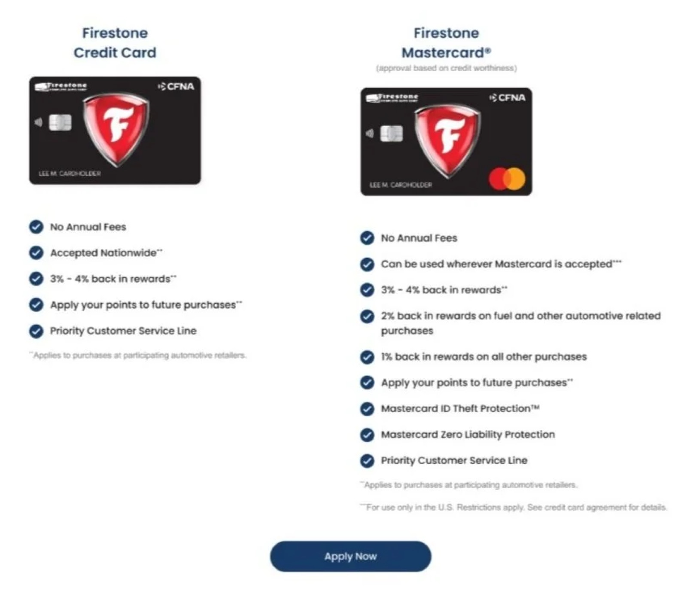
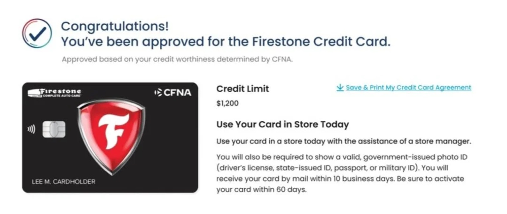
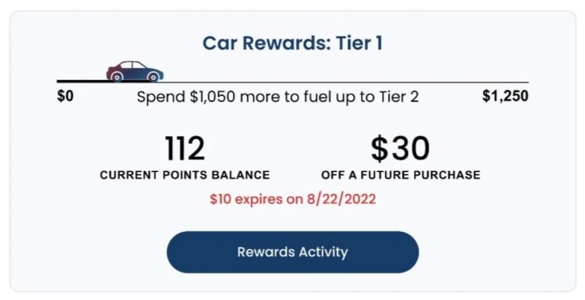

Customers were frustrated by CFNA’s opaque, auto-assigned credit card process and a rewards program they couldn’t decode. Through in-depth interviews, we found where trust broke down — and how to rebuild it.

Customers were frustrated by the lack of transparency and control in CFNA’s auto-assigned credit card process. Inconsistent benefits between the two cards led to confusion and disappointment, while the opaque rewards system — with unclear point logic and redemption options — eroded trust and increased the likelihood of abandonment or cancellation.

I conducted 90-minute, 1:1 interviews with 20 participants (10 web, 10 mobile) to understand their behaviors, preferences, and pain points. Every participant went through three scenarios:
Two design options for exploring the two-card offering and the rewards program.
Getting qualified for the Private Label card.
The rewards program and points banking.
Credit card users fall into five archetypes. Understanding their motivations and behaviors is crucial to designing experiences that meet their needs.
“I am responsible and like to pay my credit card bills in advance. I have never paid interest because I am always on top of my bills.”
“I am always on the lookout for cards with maximum rewards, cash back, and the longest payback tenure.”
“I pay only the minimum amount due, or a little more, and go about making purchases as usual. High interest rates do not bother me.”
“I own all sorts of cards, but when it comes to using them, I just don’t. I stay cautious because I have wrongly used a card.”
“I obtain all the credit cards offered to me, use them up to the maximum available credit, and then not pay up at all.”
Insight: the website didn’t make clear that CFNA selects one of two cards for each applicant, so users were frustrated to discover they’d received a different card.

Insight: participants were disappointed to receive the Private Label card instead of the Mastercard, though they’d use it in emergencies like vehicle repairs. They wanted to know why, and looked for ways to add Mastercard benefits or get it directly. Keeping or cancelling the card hinged on conversations with customer service.

Insight: transaction history was helpful, but participants were confused and overwhelmed by the reward calculation. They expected to see their current tier — and how much more they needed to spend to reach the next — on their Account Summary.

In-depth interviews revealed the key pain points in card selection and rewards comprehension. Our recommendations informed updates to the landing page, clarified messaging in the application flow, and simplified the rewards explanation to match users’ expectations and decision-making.
Implementing these changes would reduce confusion around card assignment, minimize friction during application, and build long-term engagement by improving trust in the rewards system — leading to lower abandonment and cancellation rates and stronger confidence in CFNA’s value proposition.